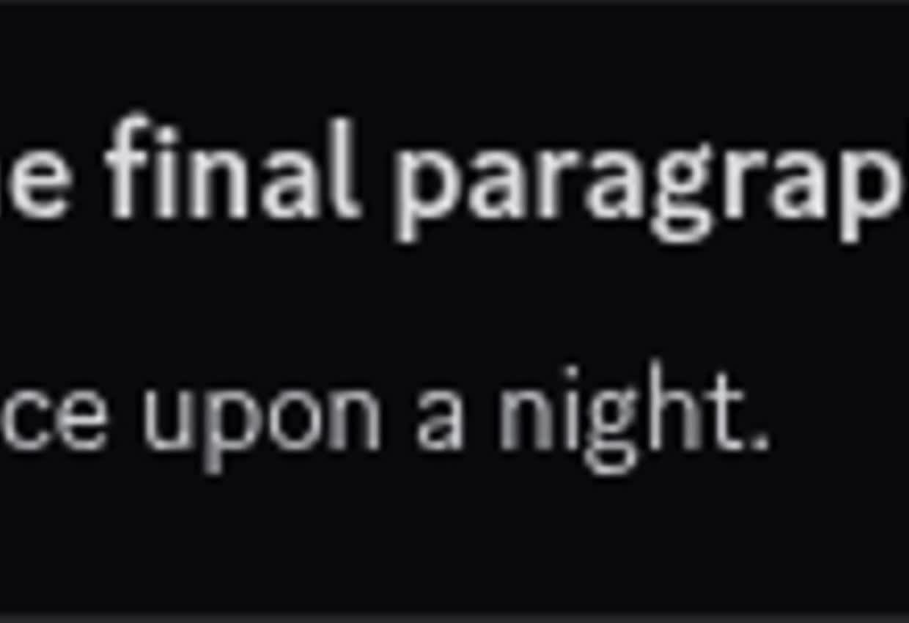
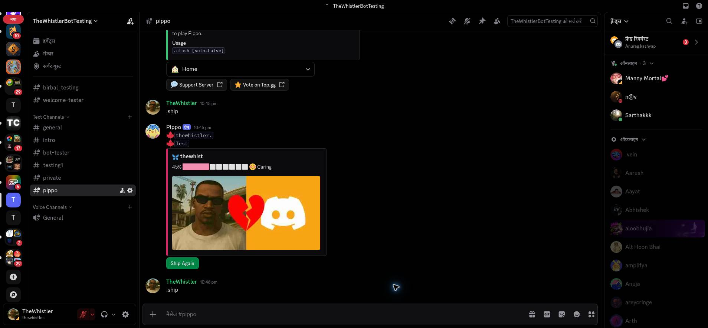

Pippo · Discord application evidence
See the bot
at work.
Real recordings from TheWhistlerBotTesting, showing the features behind Pippo’s requested gateway intents. Captured October 27, 2026. Sidebars are cropped; idle pauses are shortened. Bot outputs are unaltered.
Message Content Intent
Ordinary messages become a story.
A member starts One Word Story, types words as regular channel messages, and ends the round. Pippo reads the messages during the game and returns the collected paragraph. These are channel messages rather than slash-command options.
Open or download the MP4 ↗
Server Members Intent
A partner from the server.
A member invokes .ship without naming a partner. Pippo selects another member from the server member cache and builds its playful pairing result. The recording shows the command and selected member in the test server.

For the complete public command list, see Pippo’s command directory. For data handling, see the privacy policy.